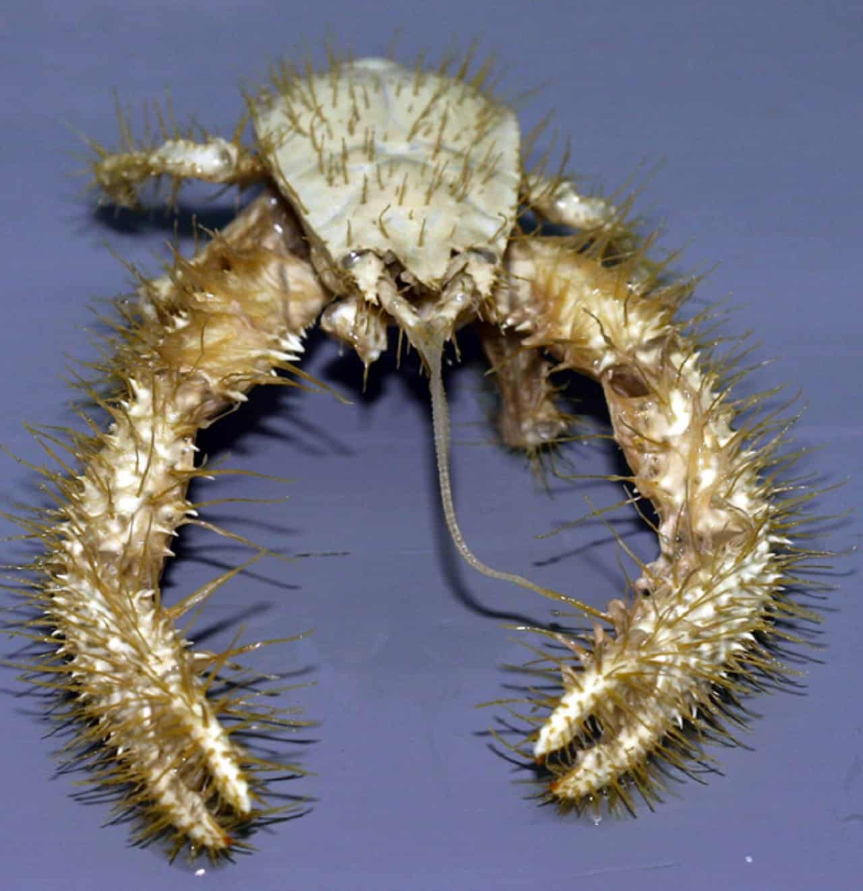

Khaki Yeti Crab-Man
Khaki Yeti Crab-Man is nothing more than a common Yeti Crab, which you have surely heard of,
except that this specific yeti crab happens to have super powers. His powers are a result
of him being born and raised in a thermal vent at the very bottom of the ocean.
Khaki Yeti Crab-Man's powers include, but are not limited to:
- The ability to walk in a straight line, for a very long time
- The abiity to live for an extended period in water and on land
- The ability to turn ingested organic matter into energy which can be used at a later time

Back to Index